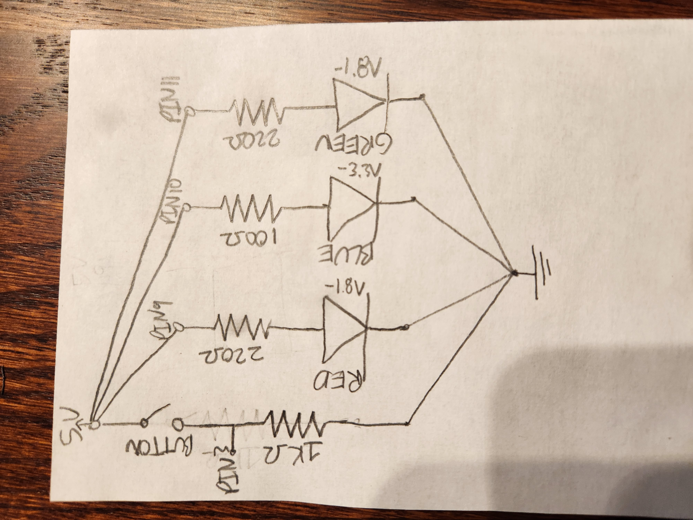

#include < CapacitiveSensor.h> // Adds Capacitive Sensor Library
#include < AdvancedSevenSegment.h> // Adds Seven Segment Display I used
#include < Arduino.h> // Adds arduino library, neccesary for the above library
CapacitiveSensor cs_4_2 = CapacitiveSensor(10,11); // 1 megohm resistor between pins 10 & 11, pin 11 is sensor pin, add wire, metal thing
AdvanceSevenSegment sevenSegment(2, 3, 4, 5, 6, 7, 8, 9); // Initiates seven segment display
void setup() {
cs_4_2.set_CS_AutocaL_Millis(0xFFFFFFFF); // turn off autocalibrate on channel 1 - just as an example
Serial.begin(9600); // initiates the serial monitor output
pinMode(2, OUTPUT); // Initializes pin as output
pinMode(3, OUTPUT); // Initializes pin as output
pinMode(4, OUTPUT); // Initializes pin as output
pinMode(5, OUTPUT); // Initializes pin as output
pinMode(6, OUTPUT); // Initializes pin as output
pinMode(7, OUTPUT); // Initializes pin as output
pinMode(8, OUTPUT); // Initializes pin as output
pinMode(9, OUTPUT); // Initializes pin as output
}
void loop(){
// capacitive sensing with spoon part
long start = millis(); // Tracks starting time as milliseconds since program started running
long total1 = cs_4_2.capacitiveSensor(30); // Gets capacitance total and makes it a variable for use
Serial.print(millis() - start); // check on performance in milliseconds
Serial.print("\t"); // tab character for debug window spacing
Serial.println(total1); // print sensor output 1
delay(50); // arbitrary delay to limit data to serial port
// Printing to seven segment display part
sevenSegment.setNumber(total1 % 10); // Grabs the last digit of the capacitive sensor total and displays it on the seven segment display
Serial.println(total1 % 10); // Prints out the same value as above to prove it works haha
}
Calculations: V = I * R
Using a 1Mega ohm resistor because we want to be able to touch it as seen in slides. I used a 220ohm resistor for each led in the 7 segment based on the resistors needed for a normal red LED.
Red LED Resistor: 5V-1.8V = 3.2V 3.2 = 20mA * R 3.2/0.02 = R R = 160 ohms Closest resistor I have above it is 220 ohms: V/I has to be less than 30mA 3.2/220 = 14.5mA so it works the best, I can't go down to 100ohms because 3.2/100 = 32.0mA which is above 30mA